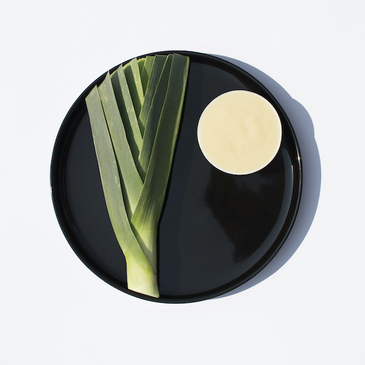

Cream of Leek

Description
Time 35 min + 30 min (boiling)
Servings: 3 — 240 kcal
Inspiration: zakochanewzupach.pl
Ingredients
- 1 leek
- 1 onion
- 2 cloves garlic
- 3 tbsp oil
- 4 potatoes
- 1 level tsp salt
- 2/3 tsp nutmeg (powder)
- 1/3 tsp white pepper
Steps
- leek
- Cut off green part
- Remove the outer layer
- Wash
- Chop
- onion + garlic
- oil
- Heat up in a pot
- Add leek, onion and garlic
- Stew (covered)
- Remove the lid
- Fry (stir often)
- potatoes
- salt, nutmeg and white pepper
- pot
- Add water
- Bring to a boil
- Boil
- Blend
Home